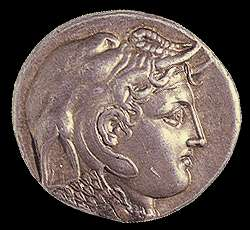

|
Ptolemy I

Ptolemy I coin
Ptolemy was a general and good friend of Alexander the Great. After Alexander's death in 323 B.C., Alexander's generals and companions fought over how to divide up his empire between them.
Ptolemy gained control over Egypt, and his family ruled Egypt for about 275 years. This is called the Ptolemaic period.
Close
|